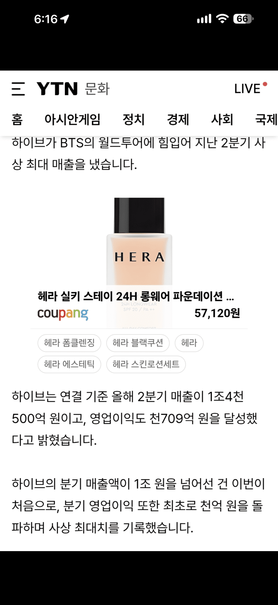
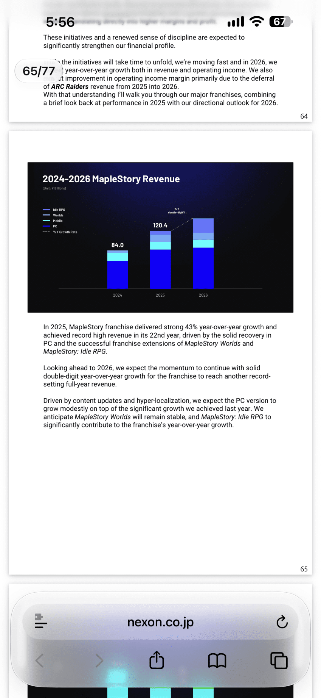
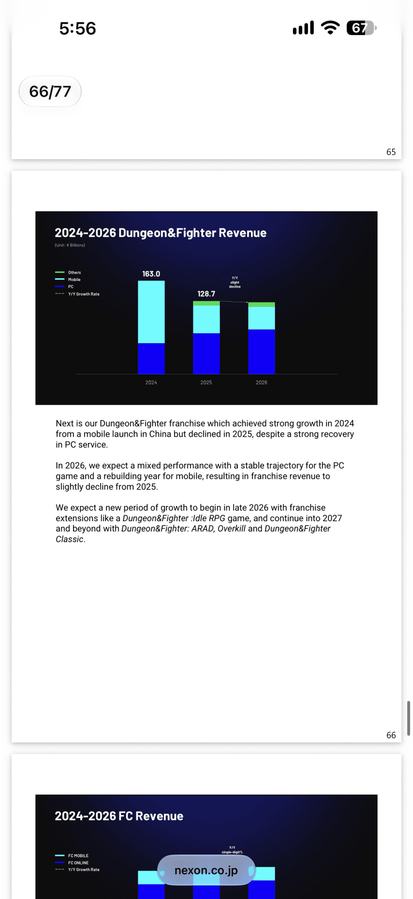
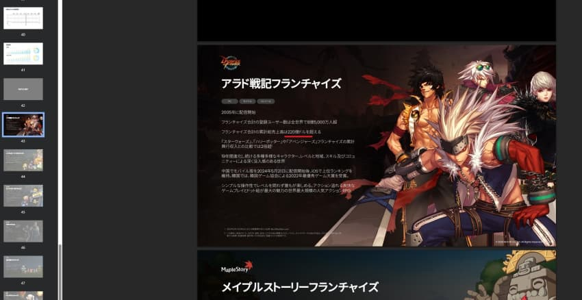
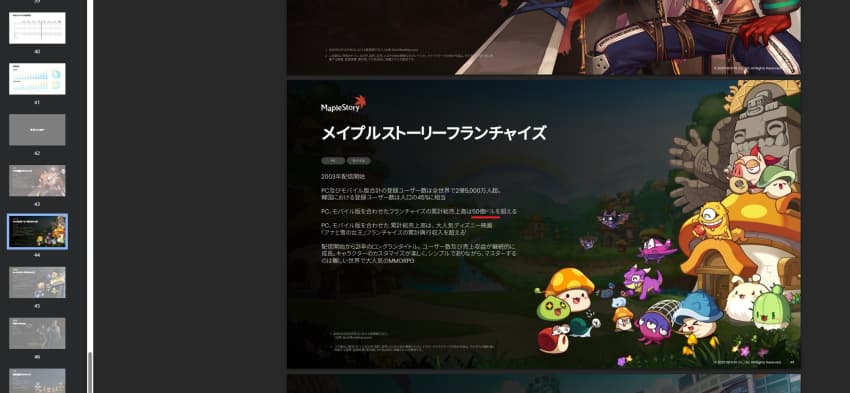
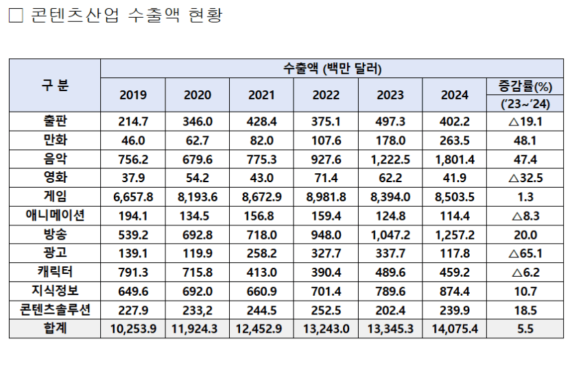

하이브에서 방탄이 복귀하면서 역대 최고치, 무려 2배 상승한 영업이익이 공개됐는데,
"1년 영업이익"이 천억.. 그나마 하이브만 방탄복귀로 수혜누린거고 이마저도 2배 올라서 천억넘긴거임..
나머지 케이팝업계는 개같이 성장률 꼴아박음
업계 전체로보면 마이너스성장
반면 게임
올해 2026 최신자료기준

메이플의 매출규모는 1조2000억

던파의 매출규모는 1조2800억
올해 넥슨 컨퍼런스콜 공식자료임
이중 던파의 영업이익이1조700억, 메이플이 8300억임
던파의경우 해외매출의 로얄티가 큰비중을 차지해서 개발비가 낮게 잡혀서 영업이익이 높게나온거고
메이플은 현재 개발서비스중인 라이브서비스 게임이 여러개있어서 (피시메이플, 모바일메이플, 메키, 메월, 클메등등) 영업이익이 낮게잡혔다고함
애초에 넥슨 오피셜 (넥슨이 일본 상장해놔서 자료가 일본어로 나와있었음)

던파의 누적수익 220억달러, 한국돈 약 30조원

메이플의 누적수익 50억달러, 약 7조원
둘이 합치면 37조원임
내일 당장 던파 메이플 둘 다 서비스 종료하고
케이팝이 지금 하이브의 성장율을 매년 유지한다쳐도 100년이 지나도 던파 메이플 수익규모를 못넘음 ㅇㅇ..
게임업계X 걍 던파/메이플 단 두개에 한정해도

던파 메이플 수출액 (게임X) >>>>>>>>>>>>>>>>>>>>>>>> 출판 + 만화 + 음악 + 영화 + 애니메이션 + 방송 + 광고 +캐릭터 +지식정보 +콘텐츠솔루션의 수출액
걍 게임업계 끌고올 필요도없음 메던선에서 정리임
케이팝이 미친 빠순이들 양산해서 틱톡이나 유튜브 혐한만 생성하는거보면 딱히 국가 이미지에 좋은지도 모르겠고 ㅇㅇ...
폴란드 위쳐밀어주는거마냥 걍 겜밀어주는게 국가 이미지에 훨씬 좋을거같노
댓글
수집 당시 댓글 285개
· ㅇㅇ · 11.10 19:36:59
ㅇㅇ · 11.10 19:27:43
· ㅇㅇ · 11.10 19:29:00
· ㅇㅇ · 11.10 19:29:07
ㅇㅇ · 11.10 19:27:52
· ㅇㅇ · 11.10 19:32:31
ㅇㅇ · 11.10 19:27:53
· ㅇㅇ · 11.10 19:28:42
ㅇㅇ · 11.10 19:28:14
ㅇㅇ · 11.10 19:28:29
ㅇㅇ · 11.10 19:28:43
ㅇㅇ · 11.10 19:28:51
김중붕실장 · 11.10 19:28:56
· ㅇㅇ · 11.10 19:31:32
ㅇㅇ · 11.10 19:29:08
ㅇㅇ · 11.10 19:29:14
· ㅇㅇ · 11.10 19:31:26
· ㅇㅇ · 11.10 19:32:54
ㅇㅇ · 11.10 19:29:16
ㅇㅇ · 11.10 19:29:22
· ㅇㅇ · 11.10 19:29:55
ㅇㅇ · 11.10 19:29:24
ㅇㅇ · 11.10 19:29:41
DC전사쿠루미쨩 · 11.10 19:29:46
ㅇㅇ · 11.10 19:29:46
ㅇㅇ · 11.10 19:30:16
· ㅇㅇ · 11.10 19:30:38
ㅇㅇ · 11.10 19:30:26
ㅇㅇ · 11.10 19:30:28
ㅇㅇ · 11.10 19:30:56
· ㅇㅇ · 11.10 19:31:08
· ㅇㅇ · 11.10 19:31:21
한남
짱개
ㅇㅇ · 11.10 19:31:02
ㅇㅇ · 11.10 19:31:27
ㅇㅇ · 11.10 19:31:37
ㅇㅇ · 11.10 19:31:41
ㅇㅇ · 11.10 19:32:01
· ㅇㅇ · 11.10 19:32:33
· ㅇㅇ · 11.10 19:34:20
· ㅇㅇ · 11.10 19:37:32
ㅇㅇ · 11.10 19:32:01
복갤러 · 11.10 19:32:13
게이팝
· ㅇㅇ · 11.10 19:34:06
ㅇㅇ · 11.10 19:32:22
· ㅇㅇ · 11.10 19:33:48
ㅇㅇ · 11.10 19:32:39
ㅇㅇ · 11.10 19:32:55
ㅇㅇ · 11.10 19:33:00
· ㅇㅇ · 11.10 19:40:36
ㅇㅇ · 11.10 19:33:03
ㅇㅇ · 11.10 19:33:09
ㅇㅇ · 11.10 19:33:11
ㅇㅇ · 11.10 19:34:01
· ㅇㅇ · 11.10 19:34:23
musk · 11.10 19:34:12
ㅇㅇ · 11.10 19:34:22
카붕이 · 11.10 19:34:22
ㅇㅇ · 11.10 19:34:41
ㅇㅇ · 11.10 19:34:50
· ㅇㅇ · 11.10 19:36:08
ㅇㅇ · 11.10 19:34:51
· ㅇㅇ · 11.10 19:38:24
ㅇㅇ · 11.10 19:35:18
ㅇㅇ · 11.10 19:35:24
ㅇㅇ · 11.10 19:35:27
ㅇㅇ · 11.10 19:35:51
ㅇㅇ · 11.10 19:36:07
ㅇㅇ · 11.10 19:36:10
kawa · 11.10 19:36:11
ㅇㅇ · 11.10 19:36:14
· ㅇㅇ · 11.10 19:41:39
ㅇㅇ · 11.10 19:36:20
ㅇㅇ · 11.10 19:36:28
ㅇㅇ · 11.10 19:36:54
ㅇㅇ · 11.10 19:37:02
ㅇㅇ · 11.10 19:37:21
해갤러 · 11.10 19:37:29
ㅇㅇ · 11.10 19:37:42
ㅇㅇ · 11.10 19:37:44
ㅇㅇ · 11.10 19:37:45
ㅇㅇ · 11.10 19:38:13
· ㅇㅇ · 11.10 19:40:31
ㅇㅇ · 11.10 19:38:29
ㅇㅇ · 11.10 19:38:30
ㅇㅇ · 11.10 19:38:33
ㅇㅇ · 11.10 19:38:34
ㅇㅇ · 11.10 19:38:37
· ㅇㅇ · 11.10 19:40:56
김이년 · 11.10 19:38:55
ㅇㅇ · 11.10 19:39:11
김이년 · 11.10 19:39:18
ㅇㅇ · 11.10 19:39:34
ㅇㅇ · 11.10 19:40:05
ㅇㅇ · 11.10 19:40:39
ㅇㅇ · 11.10 19:41:08
ㅇㅇ · 11.10 19:41:43
ㅇㅇ · 11.10 19:41:46
ㅁㅇㄻㄹ · 11.10 19:41:50
*개구리 · 11.10 19:42:03
ㅇㅇ · 11.10 19:42:32
ㅇㅇ · 11.10 18:43:40
ㅇㅇ · 11.10 18:48:52
ㅇㅇ · 11.10 18:49:26
ㅇㅇ · 11.10 18:49:51
ㅇㅇ · 11.10 18:52:37
ㅇㅇ · 11.10 18:53:12
ㅇㅇ · 11.10 18:54:26
· ㅇㅇ · 11.10 19:11:35
ㅇㅇ · 11.10 18:54:39
ㅇㅇ · 11.10 18:54:40
ㅇㅇ · 11.10 18:55:27
· ㅇㅇ · 11.10 19:14:52
ㅇㅇ · 11.10 18:55:59
ㅇㅇ · 11.10 18:57:40
· ㅇㅇ · 11.10 19:11:14
· fancyha0102 · 11.10 19:25:20
ㅇㅇ · 11.10 18:59:42
· ㅇㅇ · 11.10 19:00:34
· 프븨 · 11.10 19:27:51
· ㅇㅇ · 11.10 19:30:24
ㅇㅇ · 11.10 19:01:13
· ㅇㅇ · 11.10 19:05:17
ㅇㅇ · 11.10 19:04:21
· ㅇㅇ · 11.10 19:05:47
ㅇㅇ · 11.10 19:06:04
ㅇㅇ · 11.10 19:06:28
ㅇㅇ · 11.10 19:06:56
ㅇㅇ · 11.10 19:07:29
ㅇㅇ · 11.10 19:07:54
ㅇㅇ · 11.10 19:11:54
· ㅇㅇ · 11.10 19:16:20
· ㅇㅇ · 11.10 19:24:41
ㄹㅇㅋㅋ
· ㅇㅇ · 11.10 19:32:50
ㅇㅇ · 11.10 19:15:02
땨뗘(봇) · 11.10 19:20:07
ㅇㅇ · 11.10 19:21:13
ㅇㅇ · 11.10 19:21:15
· ㅇㅇ · 11.10 19:22:01
· ㅇㅇ · 11.10 19:32:56
유리시호 · 11.10 19:21:18
· 파도. · 11.10 19:23:25
· 샨테 · 11.10 19:25:14
ㅇㅇ · 11.10 19:21:19
ㅇㅇ · 11.10 19:21:46
ㅇㅇ · 11.10 19:21:47
ㅇㅇ · 11.10 19:21:54
ㅇㅇ · 11.10 19:22:05
ㅇㅇ · 11.10 19:22:05
ㅇㅇ · 11.10 19:22:08
황족 · 11.10 19:22:18
· ㅇㅇ · 11.10 19:36:11
· ㅇㅇ · 11.10 19:36:36
ㅇㅇ · 11.10 19:22:19
· 신 석 열 · 11.10 19:23:18
· 프븨 · 11.10 19:28:31
· ㅇㅇ · 11.10 19:34:24
· ㅇㅇ · 11.10 19:35:50
ㅇㅇ · 11.10 19:22:19
파도. · 11.10 19:23:15
· 유리시호 · 11.10 19:23:37
· 샨테 · 11.10 19:25:34
ㅇㅇ · 11.10 19:23:17
ㅇㅇ · 11.10 19:23:22
ㅇㅇ · 11.10 19:23:42
ㅇㅇ · 11.10 19:23:48
ㅇㅇ · 11.10 19:24:13
ㅇㅇ · 11.10 19:24:23
· ㅇㅇ · 11.10 19:34:32
ㅇㅇ · 11.10 19:24:23
· ㅇㅇ · 11.10 19:25:46
ㅇㅇ · 11.10 19:24:53
샨테 · 11.10 19:25:04
· 유리시호 · 11.10 19:26:09
· 파도. · 11.10 19:28:47
· ㅇㅇ · 11.10 19:37:20
ㅇㅇ · 11.10 19:25:05
ㅇㅇ · 11.10 19:25:12
· ㅇㅇ · 11.10 19:36:26
ㅇㅇ · 11.10 19:25:31
ㅇㅇ · 11.10 19:26:05
· ㅇㅇ · 11.10 19:29:23
ㅇㅇ · 11.10 19:26:14
· ㅇㅇ · 11.10 19:28:38
ㅇㅇ · 11.10 19:26:16
ㅇㅇ · 11.10 19:26:18
· ㅇㅇ · 11.10 19:26:22
ㅇㅇ · 11.10 19:26:39
· ㅇㅇ · 11.10 19:27:52
· ㅇㅇ · 11.10 19:35:22
호두남편 · 11.10 19:26:59
ㅇㅇ · 11.10 19:27:01
· ㅇㅇ · 11.10 19:30:20
ㅇㅇ · 11.10 19:27:05
· ㅇㅇ · 11.10 19:27:51
ㅇㅇ · 11.10 19:27:19
andrey_santos · 11.10 19:27:28
ㅇㅇ · 11.10 19:27:32
· ㅇㅇ · 11.10 19:28:24
· ㅇㅇ · 11.10 19:31:44
ㅇㅇ · 11.10 19:27:36
ㅇㅇ · 11.10 18:21:50
· ㅇㅇ · 11.10 18:22:42
· ㅇㅇ · 11.10 18:24:10
· 바쇽 · 11.10 18:32:14
ㅇㅇ · 11.10 18:22:01
· ㅇㅇ · 11.10 18:23:08
· ㅇㅇ · 11.10 18:28:03
ㅇㅇ · 11.10 18:22:03
ㅇㅇ · 11.10 18:22:20
· ㅇㅇ · 11.10 18:23:05
· ㅇㅇ · 11.10 18:26:21
ㅇㅇ · 11.10 18:22:47
nigger892 · 11.10 18:22:48
ㅇㅇ · 11.10 18:22:53
· ㅇㅇ · 11.10 18:23:40
· ㅇㅇ · 11.10 18:27:26
그게 뭔데
씹덕아
ㅇㅇ · 11.10 18:22:54
· ㅇㅇ · 11.10 18:23:13
· 개댇지 · 11.10 18:29:52
· ㅇㅇ · 11.10 18:40:34
· ㅇㅇ · 11.10 18:41:18
ㅇㅇ · 11.10 18:23:02
· 수류탄이야 · 11.10 18:26:47
· ㅇㅇ · 11.10 18:37:18
· ㅇㅇ · 11.10 19:23:20
실베스트리 · 11.10 18:23:13
ㅇㅇ · 11.10 18:23:24
· ㅇㅇ · 11.10 18:24:22
· ㅇㅇ · 11.10 18:24:28
· ㅇㅇ · 11.10 18:30:17
· ㅇㅇ · 11.10 19:09:12
· ㅇㅇ · 11.10 19:22:37
소프트유저 · 11.10 18:24:16
ㅇㅇ · 11.10 18:25:08
· ㅇㅇ · 11.10 18:31:03
· ㅇㅇ · 11.10 18:38:33
ㅇㅇ · 11.10 18:25:21
· ㅇㅇ · 11.10 18:28:26
· ㅇㅇ · 11.10 18:29:31
· ㅇㅇ · 11.10 18:52:42
· ㅇㅇ · 11.10 18:53:37
· ㅇㅇ · 11.10 18:56:22
· ㅇㅇ · 11.10 18:59:35
· ㅇㅇ · 11.10 19:22:55
· ㅇㅇ · 11.10 19:24:43
· ㅇㅇ · 11.10 19:42:37
수류탄이야 · 11.10 18:26:28
· 수류탄이야 · 11.10 18:27:22
· ㅇㅇ · 11.10 18:28:52
· ㅇㅇ · 11.10 18:42:49
· Byzantina · 11.10 19:06:51
· ㅇㅇ · 11.10 19:42:22
ㅇㅇ · 11.10 18:26:36
· ㅇㅇ · 11.10 18:27:10
· ㅇㅇ · 11.10 18:29:23
ㅇㅇ · 11.10 18:26:42
· ㅇㅇ · 11.10 18:28:08
· 버거먹는자 · 11.10 18:32:14
· 한국베지밀 · 11.10 18:32:30
ㅇㅇ · 11.10 18:27:46
ㅇㅇ · 11.10 18:28:01
ㅇㅇ · 11.10 18:28:10
ㅇㅇ · 11.10 18:28:58
ㅇㅇ · 11.10 18:29:16
ㅇㅇ · 11.10 18:29:26
ㅇㅇ · 11.10 18:29:39
ㅇㅇ · 11.10 18:30:33
한국베지밀 · 11.10 18:30:53
ㅇㅇ · 11.10 18:32:50
· ㅇㅇ · 11.10 18:37:24
· ㅇㅇ · 11.10 18:38:17
· ㅇㅇ · 11.10 18:45:24
ㅇㅇ · 11.10 18:33:11
· ㅇㅇ · 11.10 18:35:45
· ㅇㅇ · 11.10 18:45:46
ㅇㅇ · 11.10 18:33:52
ㅇㅇ · 11.10 18:33:57
ㅇㅇ · 11.10 18:34:57
· ㅇㅇ · 11.10 18:35:51
ㅇㅇ · 11.10 18:35:43
· ㅇㅇ · 11.10 18:50:27
frostmire · 11.10 18:36:16
ㅇㅇ · 11.10 18:37:26
ㅇㅇ · 11.10 18:37:59
ㅇㅇ · 11.10 18:39:32